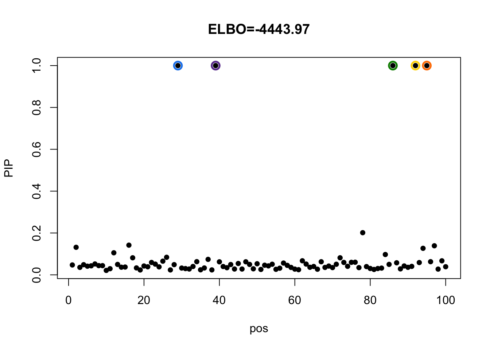
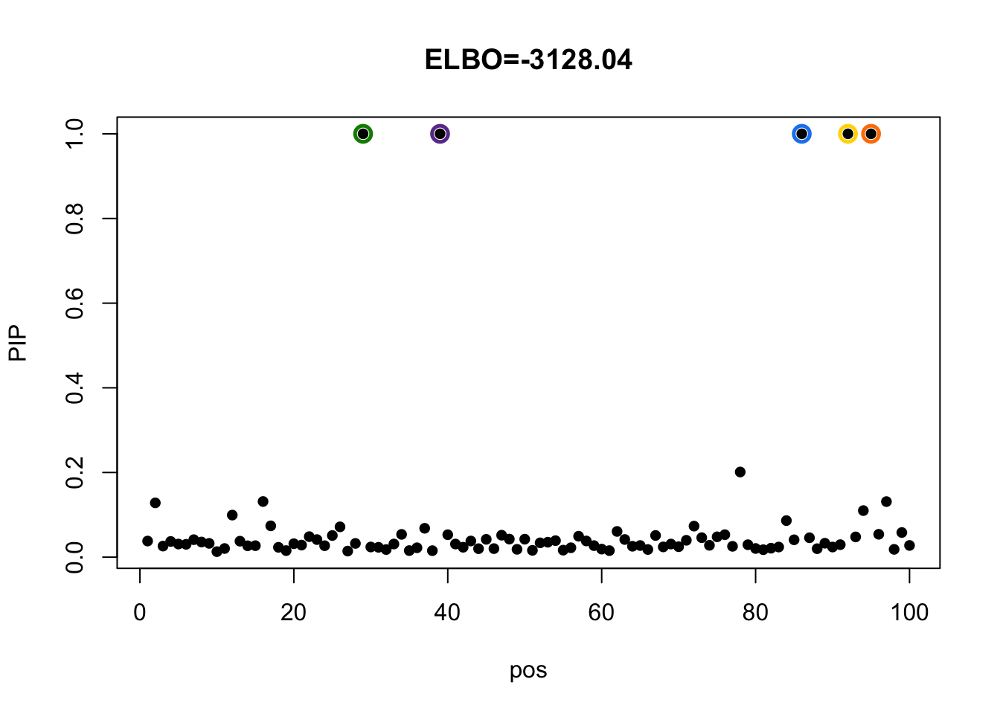
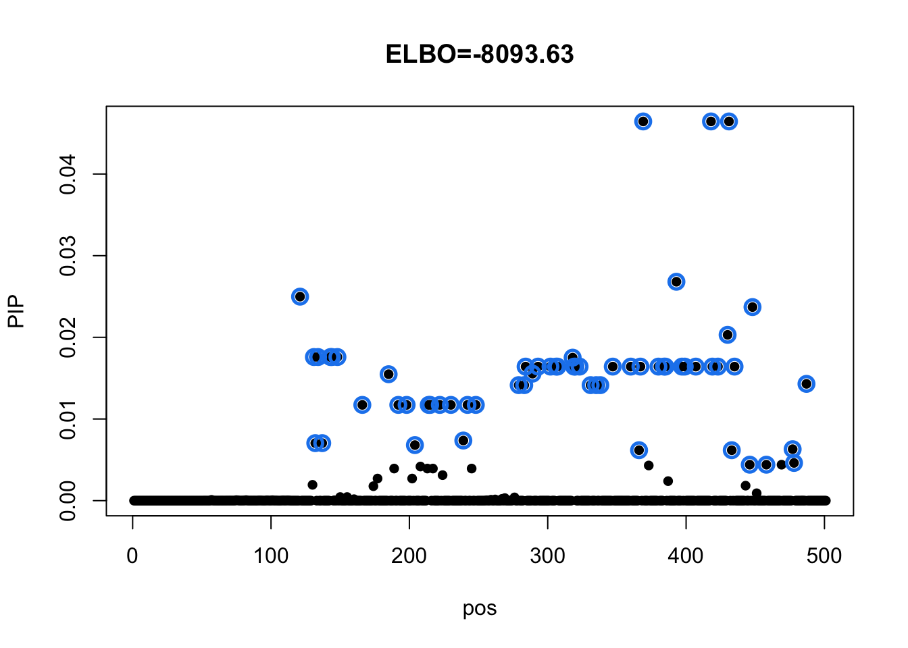
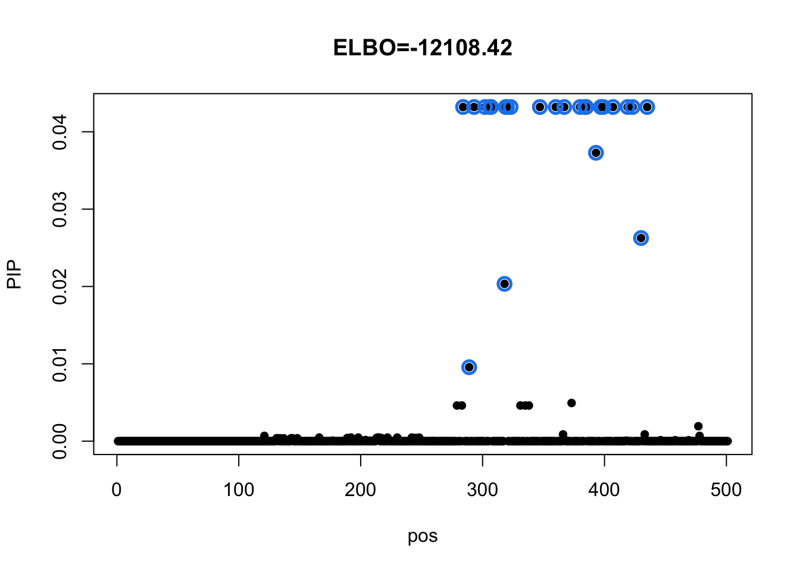

Last updated: 2020-12-02
Checks: 7 0
Knit directory: mmbr-rss-dsc/
This reproducible R Markdown analysis was created with workflowr (version 1.6.2). The Checks tab describes the reproducibility checks that were applied when the results were created. The Past versions tab lists the development history.
Great! Since the R Markdown file has been committed to the Git repository, you know the exact version of the code that produced these results.
Great job! The global environment was empty. Objects defined in the global environment can affect the analysis in your R Markdown file in unknown ways. For reproduciblity it’s best to always run the code in an empty environment.
The command set.seed(20200227) was run prior to running the code in the R Markdown file. Setting a seed ensures that any results that rely on randomness, e.g. subsampling or permutations, are reproducible.
Great job! Recording the operating system, R version, and package versions is critical for reproducibility.
Nice! There were no cached chunks for this analysis, so you can be confident that you successfully produced the results during this run.
Great job! Using relative paths to the files within your workflowr project makes it easier to run your code on other machines.
Great! You are using Git for version control. Tracking code development and connecting the code version to the results is critical for reproducibility.
The results in this page were generated with repository version 937145f. See the Past versions tab to see a history of the changes made to the R Markdown and HTML files.
Note that you need to be careful to ensure that all relevant files for the analysis have been committed to Git prior to generating the results (you can use wflow_publish or wflow_git_commit). workflowr only checks the R Markdown file, but you know if there are other scripts or data files that it depends on. Below is the status of the Git repository when the results were generated:
Ignored files:
Ignored: .DS_Store
Ignored: .Rhistory
Ignored: .Rproj.user/
Ignored: output/.DS_Store
Untracked files:
Untracked: code/mvsusie_missing_impute.R
Untracked: data/ENSG00000140265.12.Multi_Tissues.rds
Untracked: data/FastQTLSumStats.mash.FL_PC3.rds
Untracked: output/GTExprofile_res.rds
Untracked: output/GTExprofile_resL1.rds
Untracked: output/GTExprofile_resL1_elbo.rds
Untracked: output/GTExprofile_resL3.rds
Untracked: output/GTExprofile_resL3_elbo.rds
Untracked: output/GTExprofile_res_elbo.rds
Untracked: output/GTExprofile_resapprox.rds
Untracked: output/GTExprofile_resapproxL1.rds
Untracked: output/GTExprofile_resapproxL1_elbo.rds
Untracked: output/GTExprofile_resapproxL3.rds
Untracked: output/GTExprofile_resapproxL3_elbo.rds
Untracked: output/GTExprofile_resapprox_elbo.rds
Untracked: output/GTExprofile_resapproxdiag.rds
Untracked: output/GTExprofile_resapproxdiagL1.rds
Untracked: output/GTExprofile_resapproxdiagL1_elbo.rds
Untracked: output/GTExprofile_resapproxdiagL3.rds
Untracked: output/GTExprofile_resapproxdiagL3_elbo.rds
Untracked: output/GTExprofile_resapproxdiag_elbo.rds
Untracked: output/GTExprofile_resdiag.rds
Untracked: output/mmbr_gtex_res.Rprof
Untracked: output/mmbr_gtex_res_approx.Rprof
Untracked: output/mmbr_gtex_res_approx_diag.Rprof
Untracked: output/mmbr_gtex_res_diag.Rprof
Untracked: output/mnm_missing_output.20200527.rds
Untracked: output/test
Untracked: output/tiny_data_211_cond2L2.gif
Untracked: output/tiny_data_211_cond2L2.pdf
Untracked: output/tiny_data_211_cond2L3.gif
Untracked: output/tiny_data_211_cond2L3.pdf
Untracked: output/tiny_data_211_cond2initL3.gif
Untracked: output/tiny_data_211_cond2initL3.pdf
Unstaged changes:
Modified: analysis/mmbr_missing_rss_problem1.Rmd
Modified: code/mvsusie_missing.R
Note that any generated files, e.g. HTML, png, CSS, etc., are not included in this status report because it is ok for generated content to have uncommitted changes.
These are the previous versions of the repository in which changes were made to the R Markdown (analysis/mmbr_missing_imputation.Rmd) and HTML (docs/mmbr_missing_imputation.html) files. If you’ve configured a remote Git repository (see ?wflow_git_remote), click on the hyperlinks in the table below to view the files as they were in that past version.
| File | Version | Author | Date | Message |
|---|---|---|---|---|
| Rmd | 937145f | zouyuxin | 2020-12-02 | wflow_publish(“analysis/mmbr_missing_imputation.Rmd”) |
knitr::read_chunk("code/mvsusie_missing_impute.R")R code for mvSuSiE with missing data in Y (imputation):
## prior_variance is a matrix
## prior_variance and residual_variance are fixed in the algorithm.
## If compute_objective = TRUE, the stopping criteria is based on elbo;
## otherwise, it is based on changes in pip.
library(abind)
library(susieR)
mvsusie_missing_imp = function(X, Y, L=10, prior_variance, residual_variance, intercept = TRUE,
max_iter = 100, prior_weights=NULL, tol=1e-3, min_abs_corr=0.5, prior_tol=1E-9,
compute_objective = FALSE){
if (is.null(dim(Y))) Y <- matrix(Y,length(Y),1)
R <- ncol(Y)
N <- nrow(Y)
J <- ncol(X)
Y_missing <- is.na(Y)
Y_non_missing <- !Y_missing
# store missing pattern, TRUE for observe, FALSE for missing
missing_pattern <- unique(Y_non_missing)
Y_missing_pattern_assign <- numeric(N)
for(k in 1:nrow(missing_pattern)){
idx = which(apply(Y_non_missing, 1, function(x) identical(x, missing_pattern[k,])))
Y_missing_pattern_assign[idx] <- k
}
Y[Y_missing] <- 0
## compute inverse of residual variance for each missing pattern
residual_variance_inv <- list()
for(k in 1:nrow(missing_pattern)){
if(R == 1){
residual_variance_inv[[k]] <- missing_pattern[k,] / residual_variance
}else{
Vk = residual_variance[which(missing_pattern[k,]), which(missing_pattern[k,])]
eigenVk <- eigen(Vk, symmetric = TRUE)
dinv <- 1/(eigenVk$values)
residual_variance_inv[[k]] <- eigenVk$vectors %*% (dinv * t(eigenVk$vectors))
}
}
## centering X
if(intercept){
cm_x <- colMeans(X)
X <- t(t(X) - cm_x)
}
d <- colSums(X ^ 2)
d[d == 0] <- 1E-6
s = init(N, J, R, L, prior_variance, prior_weights)
s$R = Y
pip_history = list()
if(compute_objective){
elbo = c()
}else{
elbo = NA
}
for(iter in 1:max_iter){
# impute missing Y
mu = s$Xr
for (i in 1:N){
missing_pattern_i = !missing_pattern[Y_missing_pattern_assign[i],]
residual_variance_mo = residual_variance[missing_pattern_i, !missing_pattern_i, drop=FALSE]
if(any(missing_pattern_i)){
imp_mean = mu[i, missing_pattern_i] + residual_variance_mo %*% residual_variance_inv[[Y_missing_pattern_assign[i]]] %*%
(Y[i, !missing_pattern_i] - mu[i, !missing_pattern_i])
Y[i,missing_pattern_i] = imp_mean
y_var = matrix(0, R, R)
y_var[missing_pattern_i, missing_pattern_i] = residual_variance[missing_pattern_i, missing_pattern_i] - residual_variance_mo %*%
tcrossprod(residual_variance_inv[[Y_missing_pattern_assign[i]]], residual_variance_mo)
s$extra_var[[i]] = y_var
}else{
s$extra_var[[i]] = matrix(0, R, R)
}
s$yologlik[i] = mvtnorm::dmvnorm(x = Y[i,!missing_pattern_i],mean=mu[i,!missing_pattern_i],
sigma = as.matrix(residual_variance[!missing_pattern_i, !missing_pattern_i]),
log = T)
}
v_inv = invert_via_chol(residual_variance)
s$kly = sum(s$yologlik) + (N*R/2) * log(2*pi) + (N/2)*log(det(residual_variance)) +
0.5 * tr(v_inv %*% crossprod(Y - mu)) - 0.5 * tr(v_inv %*% Reduce('+', s$extra_var))
# centering Y
if(intercept){
cm_y <- colMeans(Y)
Y <- t(t(Y) - cm_y)
}
s = update_each_effect(X, Y, s, residual_variance, d, compute_objective)
pip_history[[iter]] = s$alpha
if(compute_objective){
elbo = c(elbo, get_elbo(s, X, Y, residual_variance))
}
if(iter > 1){
if(compute_objective){
if((elbo[iter]-elbo[iter-1])<tol) {
s$niter = iter
break;
}
}else{
delta = max(abs(apply(1 - pip_history[[iter]], 2, prod) - apply(1 - pip_history[[iter-1]], 2, prod)))
if(delta < tol){
s$niter = iter
s$delta = delta
break
}
}
}
}
s$elbo = elbo
s$null_index = -9
s$V = 1
s$sets = susie_get_cs(s, X=X, min_abs_corr=min_abs_corr)
s$pip = susie_get_pip(s, prior_tol=prior_tol)
return(s)
}
update_each_effect = function(X, Y, s, residual_variance, d, compute_objective) {
# Repeat for each effect to update.
L = nrow(s$alpha)
if (L > 0)
for (l in 1:L) {
# Remove lth effect from fitted values.
s$Xr = s$Xr - X %*% (s$alpha[l,] * s$mu[l,,])
# Compute residuals.
s$R = Y - s$Xr
res = SER(X, s$R, residual_variance, d, s$prior, s$prior_weights)
# Update the variational estimate of the posterior mean.
s$alpha[l,] = res$alpha
s$mu[l,,] = res$mu1
s$mu2[l,,,] = res$mu2
s$lbf[l] = res$lbf_model
if(compute_objective){
if (length(dim(res$mu2)) == 3) {
pb2 = lapply(1:nrow(res$mu1), function(j) res$alpha[j] * res$mu2[j,,])
} else {
pb2 = lapply(1:nrow(res$mu1), function(j) res$alpha[j] * matrix(res$mu2[j,]))
}
v_inv = invert_via_chol(residual_variance)
XtR = crossprod(X, s$R)
B = s$alpha[l,] * s$mu[l,,]
E1 = tr(v_inv %*% crossprod(B, XtR))
E2 = tr(v_inv %*% crossprod(XtR, B))
s$vbxxb[l] = sum(d * sapply(1:length(pb2), function(j) tr(v_inv %*% pb2[[j]])))
s$kl[l] = (E1 + E2 - s$vbxxb[l]) / 2 - res$lbf_model
# s$kl[l] = (E1 + E2) / 2 - res$lbf_model
}
s$Xr = s$Xr + X %*% (s$alpha[l,] * s$mu[l,,])
}
return(s)
}
SER = function(X, Y, residual_variance, d, prior, prior_weights = NULL){
J = ncol(X)
if (is.null(prior_weights))
prior_weights = rep(1/J,J)
XtY = crossprod(X,Y)
post = multivariate_regression(XtY, residual_variance, d, prior)
lbf = post$lbf
maxlbf = max(lbf)
# w is proportional to BF, but subtract max for numerical stability.
w = exp(lbf - maxlbf)
# Posterior prob for each SNP.
w_weighted = w * prior_weights
weighted_sum_w = sum(w_weighted)
alpha = w_weighted / weighted_sum_w
lbf_model = maxlbf + log(weighted_sum_w)
return(list(alpha = alpha,mu1 = post$b1 , mu2 = post$b2 , lbf = lbf,
lbf_model = lbf_model))
}
multivariate_regression = function(XtY, residual_variance, d, U) {
v_inv = invert_via_chol(residual_variance)
svs_inv = lapply(1:nrow(XtY), function(j) v_inv * d[j])
post_cov = lapply(1:length(svs_inv), function(j) U %*% solve(diag(nrow(U)) + svs_inv[[j]] %*% U))
lbf = sapply(1:length(svs_inv), function(j) -0.5 * log(det(diag(nrow(U)) + svs_inv[[j]] %*% U)) +
0.5*(t(XtY[j,]) %*% v_inv) %*%(post_cov[[j]]%*%(v_inv%*%XtY[j,])))
lbf[which(is.nan(lbf))] = 0
post_b1 = t(do.call(cbind, lapply(1:length(svs_inv), function(j) post_cov[[j]] %*% (v_inv %*% XtY[j,])))) # J by R
post_b2 = lapply(1:length(post_cov), function(j) tcrossprod(post_b1[j,]) + post_cov[[j]]) # length J list with R by R matrix
# deal with degerated case with 1 condition
if (ncol(post_b1) == 1) {
post_b2 = matrix(unlist(post_b2), length(post_b2), 1)
} else {
post_b2 = aperm(abind(post_b2, along = 3), c(3,1,2)) # J by R by R
}
return(list(b1 = post_b1, b2 = post_b2, lbf = lbf, cov = post_cov))
}
get_elbo = function(s, X, Y, residual_variance){
N = nrow(Y)
R = ncol(Y)
expected_loglik = -(N * R / 2) * log(2*pi) - N / 2 * log(det(residual_variance))
v_inv = invert_via_chol(residual_variance)
XtX = crossprod(X)
E1 = sapply(1:nrow(s$alpha), function(l){
B = s$alpha[l,] * s$mu[l,,]
tr(v_inv %*% crossprod(B, XtX %*% B))
})
E1 = tr(v_inv%*%crossprod(Y - s$Xr)) - sum(E1)
E2 = tr(v_inv %*% Reduce('+', s$extra_var))
essr = E1 + E2 + sum(s$vbxxb)
expected_loglik - 0.5 * essr - sum(s$kl) - s$kly
}
## utils
invert_via_chol = function(x) {
if (all(x==0)) return(x)
return(chol2inv(muffled_chol(x)))
}
muffled_chol = function(x, ...){
withCallingHandlers(chol(x, ...),
warning = function(w) {
if (grepl("the matrix is either rank-deficient or indefinite", w$message))
invokeRestart("muffleWarning")
})
}
compute_XtY = function(X, X_for_Y_missing,Y,Y_missing_pattern_assign,residual_variance_inv, Xbar){ # J by R
N = dim(X_for_Y_missing)[1]
J = dim(X_for_Y_missing)[2]
VinvY <- t(sapply(1:N, function(i) residual_variance_inv[[Y_missing_pattern_assign[i]]] %*% Y[i,])) # N by R
if(length(dim(X_for_Y_missing)) == 3){ ## approximate
XtY <- t(sapply(1:J, function(j) colSums(X_for_Y_missing[,j,] * VinvY) ))
}else{
XtY <- t(sapply(1:J, function(j) colSums(X[,j] * VinvY) - crossprod(Xbar[j,,], colSums(VinvY)) ))
}
if (nrow(XtY) != J) XtY <- t(XtY)
return(XtY)
}
init = function(N, J, R, L, U, prior_weights){
if(is.null(prior_weights))
prior_weights = rep(1/J,J)
else
prior_weights = prior_weights / sum(prior_weights)
s = list(alpha = matrix(1/J, L, J),
mu = array(0,dim = c(L, J, R)),
mu2 = array(0,dim = c(L, J, R, R)),
Xr = matrix(0,N, R),
prior = U,
prior_weights = prior_weights,
kl = numeric(L),
kly = 0,
vbxxb = numeric(L),
R = matrix(0,N, R),
extra_var = list(),
yologlik = numeric(N))
class(s) = 'susie'
return(s)
}
tr = function (m) {
if (!is.matrix(m) | (dim(m)[1] != dim(m)[2]))
stop("Input to tr() function must be a square matrix")
return(sum(diag(m), na.rm = TRUE))
}
simulate_multivariate = function(n=100,p=100,r=2,center_scale=TRUE,y_missing=0) {
set.seed(1)
res = mmbr::mmbr_sim1(n,p,r,1,center_scale=center_scale,y_missing=y_missing)
res$L = 10
return(res)
}We simulate data with 20% missing data.
set.seed(2020)
dat = simulate_multivariate(n=500, p=100, r=5, y_missing = 0.2)The true effects are at p=29, 39, 86, 92, 95.
dat$b[which(rowSums(dat$b!=0)>0),] [,1] [,2] [,3] [,4] [,5]
[1,] 0 0 1 0 0
[2,] 0 1 0 0 0
[3,] 1 0 0 0 0
[4,] 0 0 0 1 0
[5,] 0 0 0 0 1# remove individuals without any observation
rm.id = which(rowSums(is.na(dat$y_missing)) == 5)
X = dat$X[-rm.id,]
Y = dat$y[-rm.id,]
Y_missing = dat$y_missing[-rm.id,]
prior_var = diag(5)
residual_var = cov(Y)mvSuSiE with exact computation
m = mmbr::msusie(X, Y_missing, L=10, prior_variance = prior_var, residual_variance = residual_var,
intercept = T, standardize = F,
max_iter = 100, compute_objective = TRUE,
estimate_prior_variance = FALSE, estimate_residual_variance = FALSE)
susie_plot(m, y='PIP', main=paste0('ELBO=', round(m$elbo[m$niter],2))) Check CS details:
m$sets$cs$L1
[1] 92
$L2
[1] 95
$L3
[1] 39
$L4
[1] 29
$L6
[1] 86mvSuSiE with missing data imputation
m_imp = mvsusie_missing_imp(X, Y_missing, L=10, prior_variance = prior_var, residual_variance = residual_var, max_iter = 100, compute_objective = TRUE, intercept = TRUE)
susie_plot(m_imp, y='PIP', main=paste0('ELBO=', round(m_imp$elbo[m_imp$niter],2))) Check CS details:
m_imp$sets$cs$L1
[1] 92
$L2
[1] 95
$L3
[1] 39
$L4
[1] 86
$L5
[1] 29dat = readRDS('data/ENSG00000140265.12.Multi_Tissues.problem.rds')Model with exact computation
m = mmbr::msusie(dat$X, dat$Y, prior_variance = dat$prior$XX, residual_variance = dat$residual_var, L = 1, approximate=FALSE, compute_objective = T, intercept = T, standardize = F, estimate_prior_variance = F, estimate_residual_variance = F)
susie_plot(m, y='PIP', main=paste0('ELBO=', round(m$elbo[m$niter],2))) Check CS details:
m$sets$cs
$cs$L1
[1] 121 131 132 134 137 143 144 148 166 185 192 198 204 214 215 222 230 239 242
[20] 248 279 283 284 289 293 302 306 307 318 319 320 323 331 335 338 347 360 366
[39] 367 369 380 384 385 393 397 399 407 418 419 423 430 431 433 435 446 448 458
[58] 477 478 487
$purity
min.abs.corr mean.abs.corr median.abs.corr
L1 0.8939012 0.9743227 0.9791716
$cs_index
[1] 1
$coverage
[1] 0.9507911
$requested_coverage
[1] 0.95Model with imputation
m_imp = mvsusie_missing_imp(dat$X, dat$Y, prior_variance = dat$prior$XX, residual_variance = dat$residual_var, L = 1, compute_objective = T)
susie_plot(m_imp, y='PIP', main=paste0('ELBO=', round(m_imp$elbo[m_imp$niter],2))) Check CS details:
m_imp$sets$cs
$cs$L1
[1] 284 289 293 302 306 307 318 319 320 323 347 360 367 380 384 385 393 397 399
[20] 407 419 423 430 435
$purity
min.abs.corr mean.abs.corr median.abs.corr
L1 0.9875344 0.9983393 1
$cs_index
[1] 1
$coverage
[1] 0.9575175
$requested_coverage
[1] 0.95
sessionInfo()R version 4.0.3 (2020-10-10)
Platform: x86_64-apple-darwin17.0 (64-bit)
Running under: macOS Big Sur 10.16
Matrix products: default
BLAS: /Library/Frameworks/R.framework/Versions/4.0/Resources/lib/libRblas.dylib
LAPACK: /Library/Frameworks/R.framework/Versions/4.0/Resources/lib/libRlapack.dylib
locale:
[1] en_US.UTF-8/en_US.UTF-8/en_US.UTF-8/C/en_US.UTF-8/en_US.UTF-8
attached base packages:
[1] stats graphics grDevices utils datasets methods base
other attached packages:
[1] susieR_0.9.56 abind_1.4-5 workflowr_1.6.2
loaded via a namespace (and not attached):
[1] progress_1.2.2 tidyselect_1.1.0 xfun_0.19 purrr_0.3.4
[5] ashr_2.2-51 lattice_0.20-41 colorspace_2.0-0 vctrs_0.3.5
[9] generics_0.1.0 htmltools_0.5.0 yaml_2.2.1 rlang_0.4.9
[13] mixsqp_0.3-46 later_1.1.0.1 pillar_1.4.7 glue_1.4.2
[17] mashr_0.2.40 matrixStats_0.57.0 lifecycle_0.2.0 plyr_1.8.6
[21] stringr_1.4.0 munsell_0.5.0 gtable_0.3.0 mvtnorm_1.1-1
[25] evaluate_0.14 knitr_1.30 httpuv_1.5.4 invgamma_1.1
[29] irlba_2.3.3 Rcpp_1.0.5 promises_1.1.1 scales_1.1.1
[33] rmeta_3.0 truncnorm_1.0-8 fs_1.5.0 ggplot2_3.3.2
[37] hms_0.5.3 digest_0.6.27 stringi_1.5.3 dplyr_1.0.2
[41] mmbr_0.0.1.0305 grid_4.0.3 rprojroot_2.0.2 tools_4.0.3
[45] magrittr_2.0.1 tibble_3.0.4 crayon_1.3.4 whisker_0.4
[49] pkgconfig_2.0.3 ellipsis_0.3.1 Matrix_1.2-18 prettyunits_1.1.1
[53] SQUAREM_2020.5 assertthat_0.2.1 rmarkdown_2.5 reshape_0.8.8
[57] rstudioapi_0.13 R6_2.5.0 git2r_0.27.1 compiler_4.0.3